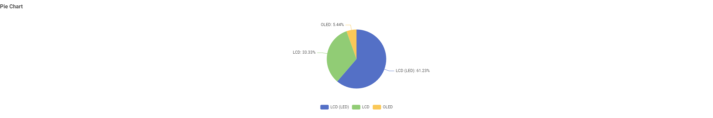
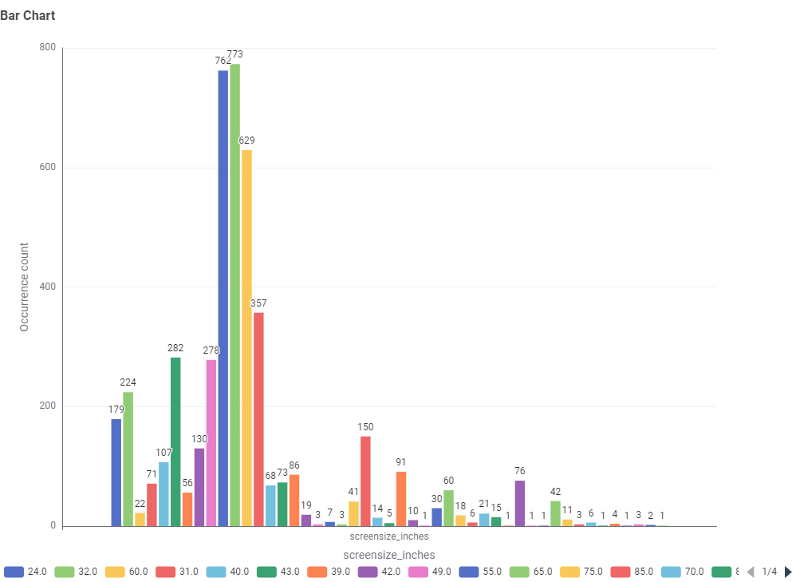
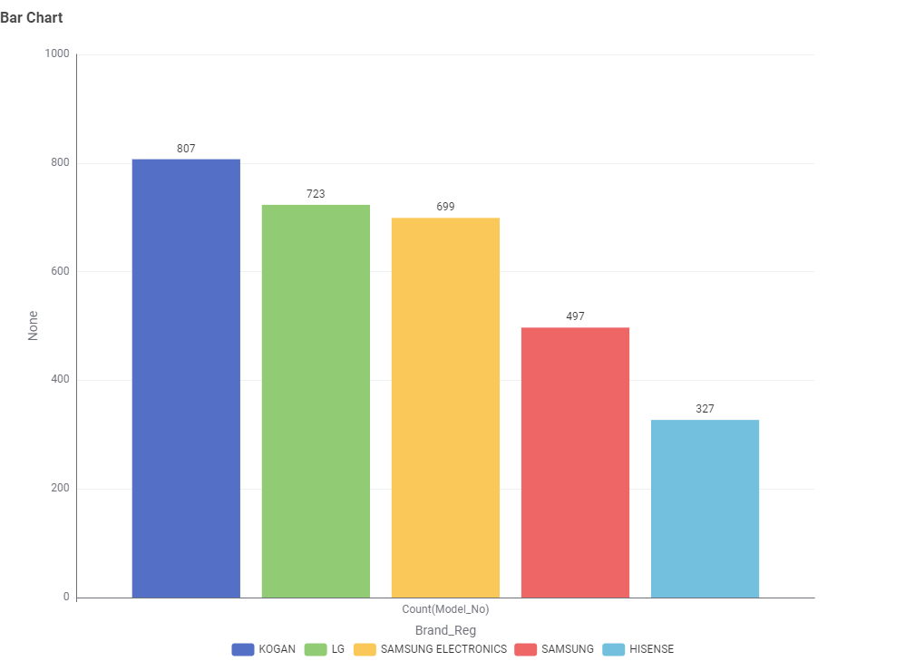
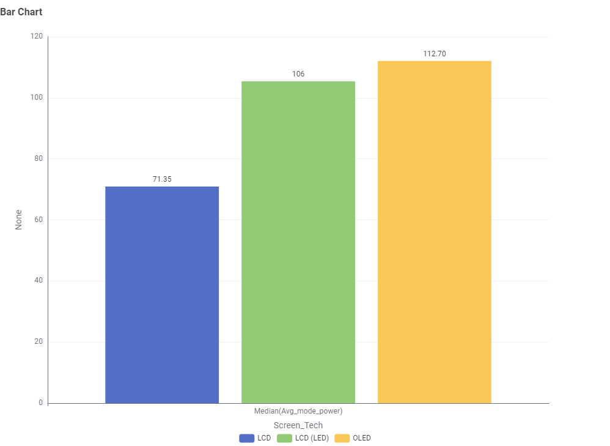
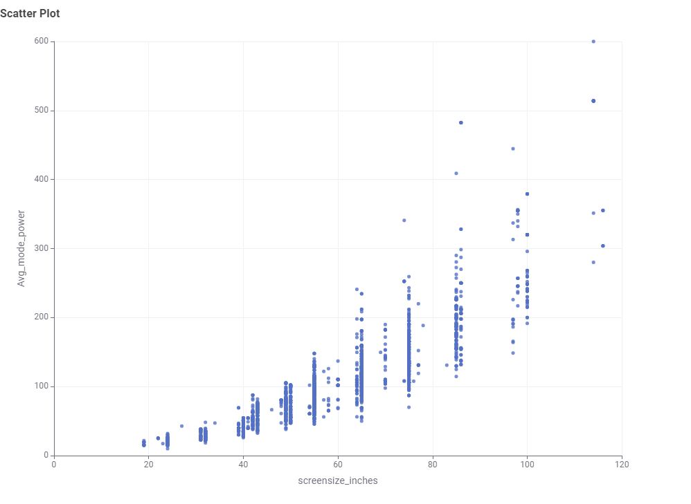
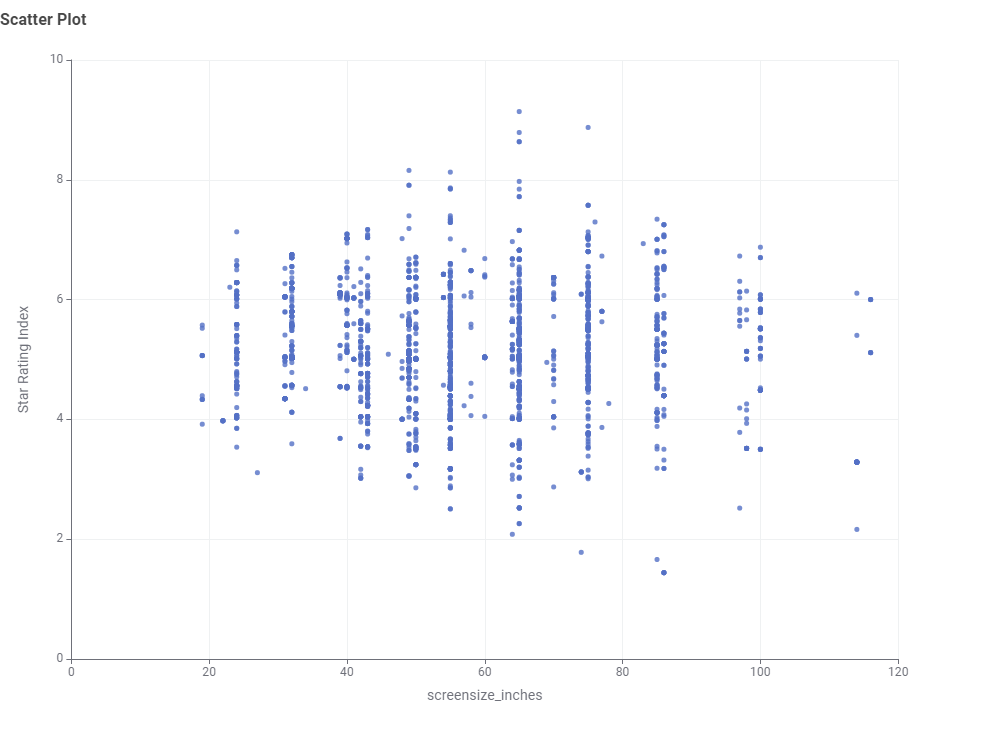
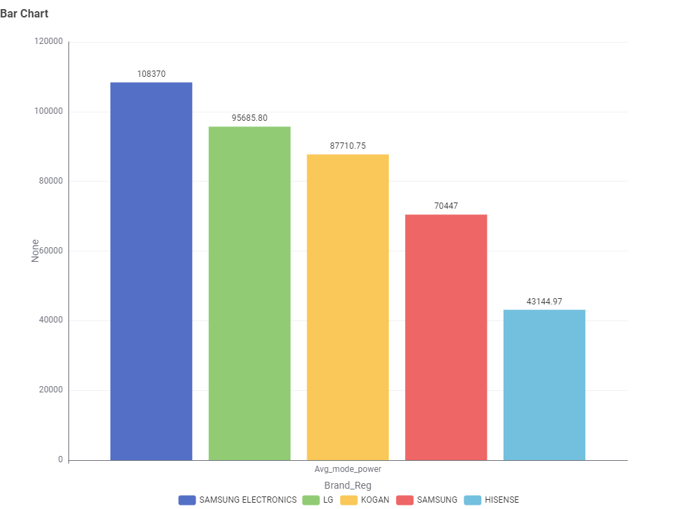

Television Energy Insights: Data Story
This section presents findings from the Australian Government's Television Energy Rating dataset. The aim is to help Australian consumers make informed decisions about technology, size, brand, and efficiency.
Chart 1: What TV technologies are most common?
Pie Chart

Most TVs in Australia are LCD (LED), while standard LCD and OLED technologies are far less common.
Chart 2: What screen sizes are most frequent?
Bar Chart

55-inch and 65-inch TVs are the most frequent in the Australian market, followed by 75-inch models.
Chart 3: Which brands dominate the market?
Bar Chart

Kogan, LG, Samsung Electronics, Samsung, and Hisense offer the largest number of TV models in Australia.
Chart 4: Which screen type uses the least power?
Bar Chart

Standard LCD TVs consume the least power on average, while LCD (LED) and OLED use more energy due to higher brightness and screen features.
Chart 5: What is the relationship between screen size and power use?
Scatter Plot

Larger TVs consume significantly more power — there is a strong positive correlation between screen size and average mode power draw.
Chart 6: What is the relationship between star rating and screen size?
Scatter Plot

Star ratings are evenly distributed across screen sizes, indicating that larger televisions can still achieve high energy efficiency ratings if designed well.
Chart 7: Are there differences in power consumption between brands?
Bar Chart

Yes, total energy demand varies substantially by brand based on screen sizes and display technologies offered across their lineup.
Conclusion
When choosing a TV, balance size, brand, and efficiency. A 55-inch LED TV is common and energy-smart for most Australian households.